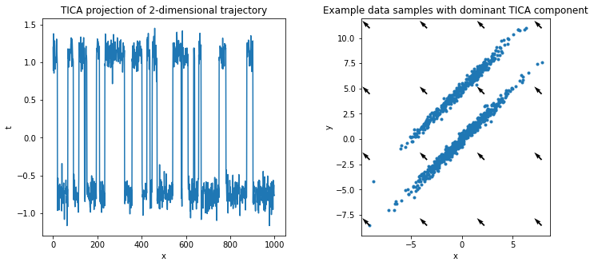
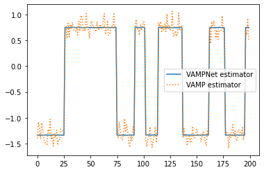
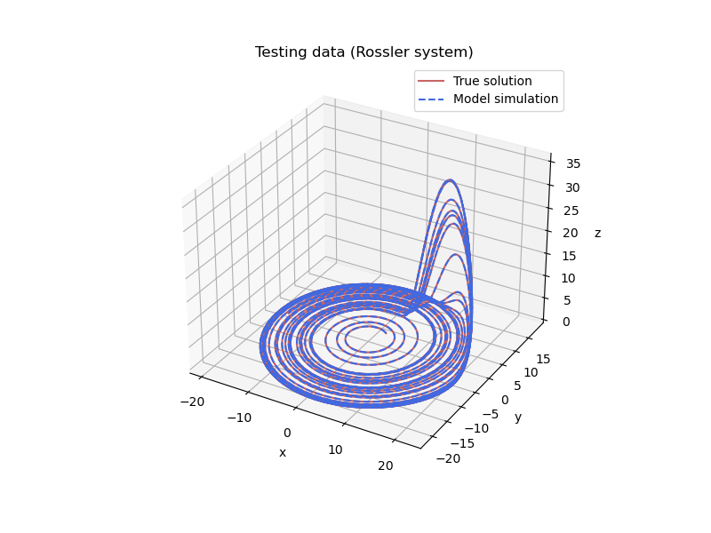
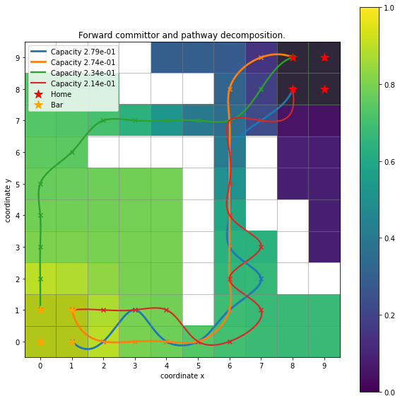
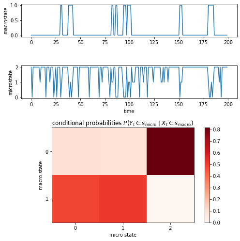

Deeptime
Deeptime is a Python library for analysis of time series data. In particular, methods for dimension reduction, clustering, and Markov model estimation are implemented.
The API is similar to that of scikit-learn and offers basic compatibility to its tools via ducktyping.
Deeptime can be installed via conda (conda
install -c conda-forge deeptime) delivering pre-compiled binaries
and is also available via pip
(pip install deeptime),
causing the binaries to be compiled locally.
Please note our publication 10.1088/2632-2153/ac3de0.
Main algorithms
Dimension reduction of dynamical data

Deep dimension reduction with neural networks

SINDy - Find governing equations from data

Markov state models

Hidden markov models

Citation
When using deeptime in your work, please cite the following
@article{hoffmann2021deeptime,
title={Deeptime: a Python library for machine learning dynamical models from time series data},
author={Hoffmann, Moritz and Scherer, Martin Konrad and Hempel, Tim and Mardt, Andreas and de Silva, Brian and Husic, Brooke Elena and Klus, Stefan and Wu, Hao and Kutz, J Nathan and Brunton, Steven and Noé, Frank},
journal={Machine Learning: Science and Technology},
year={2021},
publisher={IOP Publishing}
}